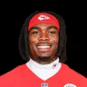
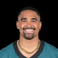
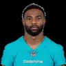
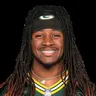
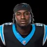
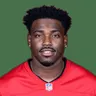

BALL KEEP
Superflex · PPR · Sleeper
2026 Redraft · 0.5 PPR
The Classic
Half-PPR is the format most rooms actually run. We start from the same PPR Super Aggregate as The Board, then apply half the Standard tax: running backs −2.25 ranks, receivers +1.5, tight ends +1, quarterbacks +0.25. RBs climb versus full PPR. Chase and Puka still go early, just not as automatic 1.01s. The Board next door is full PPR. Standard is zero. Sort by position with the chips. Check a name when they are off the board in your room. Crossed-off names stay on the list until you refresh.
| BK | Player | Pos/Team | Age | Adj. Score | BK Value |
|---|---|---|---|---|---|
| 1 | RB1DET | 24 | -0.39 | 12,000 | |
| 2 | RB2ATL | 24 | 0.85 | 10,873 | |
| 3 | RB3SF | 30 | 4.91 | 10,228 | |
| 4 | Jaxon Smith-NjigbaCrossed off | WR1SEA | 24 | 5.09 | 9,769 |
| 5 | Ja'Marr ChaseCrossed off | WR2CIN | 26 | 6.17 | 9,409 |
| 6 | RB4KC | 26 | 8.9 | 9,111 | |
| 7 | RB5BUF | 27 | 7.09 | 8,855 | |
| 8 | WR3DET | 27 | 7.98 | 8,629 | |
| 9 | WR4MIN | 27 | 12.07 | 8,426 | |
| 10 | Chase BrownCrossed off | RB6CIN | 26 | 14.61 | 8,241 |
| 11 | CeeDee LambCrossed off | WR5DAL | 27 | 10.05 | 8,070 |
| 12 | RB7IND | 27 | 15.54 | 7,912 | |
| 13 | RB8DAL | 26 | 17.41 | 7,764 | |
| 14 | Drake LondonCrossed off | WR6ATL | 25 | 21.13 | 7,624 |
| 15 | Chris OlaveCrossed off | WR7NO | 26 | 21.82 | 7,492 |
| 16 | Malik NabersCrossed off | WR8NYG | 23 | 23.17 | 7,367 |
| 17 | TE1LV | 23 | 24.93 | 7,247 | |
| 18 | Bucky IrvingCrossed off | RB9TB | 24 | 25.76 | 7,132 |
| 19 | De'Von AchaneCrossed off | RB10MIA | 25 | 8.06 | 7,023 |
| 20 | Josh AllenCrossed off | QB1BUF | 30 | 25.0 | 6,917 |
| 21 | D'Andre SwiftCrossed off | RB11CHI | 27 | 26.19 | 6,815 |
| 22 | Nico CollinsCrossed off | WR9HOU | 27 | 28.92 | 6,717 |
| 23 | Tee HigginsCrossed off | WR10CIN | 27 | 28.79 | 6,621 |
| 24 | RB12BAL | 32 | 28.79 | 6,529 | |
| 25 | RB13CAR | 27 | 29.81 | 6,440 | |
| 26 | RB14LAR | 26 | 30.06 | 6,353 | |
| 27 | TE2ARI | 27 | 30.58 | 6,268 | |
| 28 | RB15JAX | 23 | 30.75 | 6,186 | |
| 29 | Garrett WilsonCrossed off | WR11NYJ | 26 | 31.88 | 6,105 |
| 30 | George PickensCrossed off | WR12DAL | 25 | 32.71 | 6,027 |
| 31 | Zay FlowersCrossed off | WR13BAL | 26 | 33.21 | 5,951 |
| 32 | RB16PIT | 28 | 34.8 | 5,876 | |
| 33 |  Rashee RiceCrossed off | WR14KC | 26 | 35.82 | 5,803 |
| 34 | Christian WatsonCrossed off | WR15GB | 27 | 37.96 | 5,732 |
| 35 | Tetairoa McMillanCrossed off | WR16CAR | 23 | 38.0 | 5,662 |
| 36 | QB2CIN | 29 | 38.83 | 5,593 | |
| 37 | Matthew GoldenCrossed off | WR17GB | 23 | 41.02 | 5,526 |
| 38 | Cam SkatteboCrossed off | RB17NYG | 24 | 43.18 | 5,460 |
| 39 | Ashton JeantyCrossed off | RB18LV | 22 | 43.6 | 5,396 |
| 40 | WR18LAR | 25 | 44.96 | 5,333 | |
| 41 | Saquon BarkleyCrossed off | RB19PHI | 29 | 40.93 | 5,271 |
| 42 | Breece HallCrossed off | RB20NYJ | 25 | 42.08 | 5,210 |
| 43 | RB21MIA | 22 | 45.81 | 5,150 | |
| 44 | Luther BurdenCrossed off | WR19CHI | 22 | 46.17 | 5,091 |
| 45 | QB3SF | 26 | 51.75 | 5,033 | |
| 46 | WR20JAX | 24 | 48.08 | 4,976 | |
| 47 | WR21BUF | 29 | 48.57 | 4,920 | |
| 48 | Jameson WilliamsCrossed off | WR22DET | 25 | 49.62 | 4,865 |
| 49 | Jaylen WaddleCrossed off | WR23DEN | 27 | 52.58 | 4,811 |
| 50 | Jordyn TysonCrossed off | WR24NO | 22 | 52.88 | 4,758 |
| 51 | RB22TEN | 29 | 53.28 | 4,706 | |
| 52 | Emeka EgbukaCrossed off | WR25TB | 24 | 53.46 | 4,654 |
| 53 | George KittleCrossed off | TE3SF | 33 | 54.76 | 4,603 |
| 54 | Carnell TateCrossed off | WR26TEN | 21 | 55.1 | 4,553 |
| 55 | RB23LAC | 23 | 55.35 | 4,504 | |
| 56 | Terry McLaurinCrossed off | WR27WAS | 31 | 56.25 | 4,455 |
| 57 | Stefon DiggsCrossed off | WR28WAS | 32 | 56.32 | 4,408 |
| 58 | QB4JAX | 27 | 56.85 | 4,360 | |
| 59 |  Jalen HurtsCrossed off | QB5PHI | 28 | 54.19 | 4,314 |
| 60 | DeVonta SmithCrossed off | WR29PHI | 23 | 57.17 | 4,268 |
| 61 | QB6CHI | 25 | 57.51 | 4,223 | |
| 62 | KC Concepcion Jr.Crossed off | WR30CLE | 22 | 59.4 | 4,178 |
| 63 | RB24DEN | 23 | 59.68 | 4,134 | |
| 64 | WR31SF | 33 | 60.44 | 4,091 | |
| 65 | A.J. BrownCrossed off | WR32NE | 29 | 62.21 | 4,048 |
| 66 | TE4CHI | 22 | 62.78 | 4,006 | |
| 67 | Davante AdamsCrossed off | WR33LAR | 33 | 63.93 | 3,964 |
| 68 | Rome OdunzeCrossed off | WR34CHI | 24 | 64.03 | 3,923 |
| 69 | RB25CLE | 23 | 61.42 | 3,882 | |
| 70 | Ladd McConkeyCrossed off | WR35LAC | 25 | 64.07 | 3,842 |
| 71 | Dak PrescottCrossed off | QB7DAL | 33 | 67.93 | 3,803 |
| 72 | Jared GoffCrossed off | QB8DET | 32 | 68.39 | 3,764 |
| 73 | Jayden DanielsCrossed off | QB9WAS | 25 | 70.0 | 3,725 |
| 74 | Jordan LoveCrossed off | QB10GB | 28 | 73.21 | 3,687 |
| 75 | Josh DownsCrossed off | WR36KC | 25 | 71.24 | 3,650 |
| 76 | DK MetcalfCrossed off | WR37PIT | 28 | 71.94 | 3,613 |
| 77 | Jaxson DartCrossed off | QB11NYG | 23 | 72.08 | 3,576 |
| 78 | RB26LAR | 25 | 74.1 | 3,540 | |
| 79 | QB12KC | 31 | 75.36 | 3,504 | |
| 80 | Josh JacobsCrossed off | RB27GB | 28 | 76.15 | 3,469 |
| 81 | Denzel BostonCrossed off | WR38CLE | 22 | 76.79 | 3,434 |
| 82 | RB28NE | 28 | 77.22 | 3,399 | |
| 83 | Kenneth GainwellCrossed off | RB29TB | 27 | 81.44 | 3,365 |
| 84 | Harold FanninCrossed off | TE5CLE | 22 | 82.0 | 3,331 |
| 85 | Jakobi MeyersCrossed off | WR39JAX | 30 | 84.92 | 3,298 |
| 86 | WR40ARI | 26 | 85.38 | 3,265 | |
| 87 | C.J. StroudCrossed off | QB13HOU | 25 | 85.47 | 3,233 |
| 88 | TE6IND | 24 | 85.83 | 3,201 | |
| 89 | Wan'Dale RobinsonCrossed off | WR41TEN | 25 | 86.06 | 3,169 |
| 90 | Jalen CokerCrossed off | WR42CAR | 25 | 86.72 | 3,138 |
| 91 | TreVeyon HendersonCrossed off | RB30NE | 24 | 87.01 | 3,106 |
| 92 | Omar Cooper Jr.Crossed off | WR43NYJ | 22 | 87.51 | 3,076 |
| 93 | Travis EtienneCrossed off | RB31NO | 27 | 88.14 | 3,046 |
| 94 | Makai LemonCrossed off | WR44PHI | 22 | 89.38 | 3,016 |
| 95 | WR45DAL | 27 | 89.47 | 2,986 | |
| 96 | TE7DET | 25 | 89.61 | 2,957 | |
| 97 | Antonio WilliamsCrossed off | WR46WAS | 22 | 90.75 | 2,928 |
| 98 | WR47SF | 30 | 91.19 | 2,899 | |
| 99 | TE8NYG | 26 | 91.46 | 2,871 | |
| 100 | Tucker KraftCrossed off | TE9GB | 26 | 94.61 | 2,843 |
| 101 | Courtland SuttonCrossed off | WR48DEN | 31 | 95.25 | 2,815 |
| 102 | WR49PIT | 22 | 100.17 | 2,788 | |
| 103 | Keenan AllenCrossed off | WR50SF | 34 | 96.62 | 2,760 |
| 104 | Tre TuckerCrossed off | WR51LV | 25 | 96.62 | 2,734 |
| 105 | QB14MIN | 38 | 98.29 | 2,707 | |
| 106 | Khalil ShakirCrossed off | WR52BUF | 26 | 100.19 | 2,681 |
| 107 | Jordan AddisonCrossed off | WR53MIN | 24 | 101.26 | 2,655 |
| 108 | Marvin HarrisonCrossed off | WR54HOU | 24 | 101.57 | 2,629 |
| 109 | TE10ATL | 26 | 101.85 | 2,604 | |
| 110 | TE11KC | 37 | 102.04 | 2,579 | |
| 111 | Bryce YoungCrossed off | QB15CAR | 25 | 102.31 | 2,554 |
| 112 | RB32HOU | 29 | 101.82 | 2,529 | |
| 113 | RB33SEA | 23 | 102.43 | 2,505 | |
| 114 | Matthew StaffordCrossed off | QB16LAR | 38 | 102.74 | 2,481 |
| 115 | Kyle MonangaiCrossed off | RB34CHI | 24 | 103.07 | 2,457 |
| 116 | Jeremiyah LoveCrossed off | RB35ARI | 21 | 103.64 | 2,434 |
| 117 | Caleb DouglasCrossed off | WR55MIA | 23 | 104.71 | 2,410 |
| 118 | RB36MIN | 31 | 104.89 | 2,387 | |
| 119 | RB37SEA | 25 | 104.96 | 2,365 | |
| 120 | Tank DellCrossed off | WR56HOU | 27 | 105.86 | 2,342 |
| 121 | QB17DEN | 26 | 106.03 | 2,320 | |
| 122 | Chris GodwinCrossed off | WR57TB | 30 | 108.58 | 2,298 |
| 123 | Tyler ShoughCrossed off | QB18NO | 27 | 108.63 | 2,276 |
| 124 | Adonai MitchellCrossed off | WR58NYJ | 24 | 109.18 | 2,254 |
| 125 | Lamar JacksonCrossed off | QB19BAL | 29 | 109.31 | 2,233 |
| 126 | RB38WAS | 27 | 110.14 | 2,212 | |
| 127 | QB20PIT | 42 | 110.25 | 2,191 | |
| 128 | QB21NE | 24 | 110.69 | 2,170 | |
| 129 | TE12PHI | 31 | 111.24 | 2,149 | |
| 130 | RB39GB | 25 | 111.58 | 2,129 | |
| 131 | RB40KC | 23 | 113.11 | 2,109 | |
| 132 | TE13BUF | 27 | 113.53 | 2,089 | |
| 133 | J.J. McCarthyCrossed off | QB22NYG | 23 | 114.25 | 2,069 |
| 134 | RB41DEN | 27 | 115.04 | 2,050 | |
| 135 | RB42HOU | 25 | 120.18 | 2,030 | |
| 136 | Jake FergusonCrossed off | TE14DAL | 27 | 115.52 | 2,011 |
| 137 | Xavier WorthyCrossed off | WR59KC | 23 | 115.54 | 1,992 |
| 138 | Jonathon BrooksCrossed off | RB43CAR | 23 | 116.56 | 1,974 |
| 139 | RB44PIT | 28 | 120.32 | 1,955 | |
| 140 | Tre' HarrisCrossed off | WR60LAC | 24 | 121.53 | 1,937 |
| 141 | TE15MIN | 29 | 122.25 | 1,919 | |
| 142 | TE16WAS | 27 | 122.44 | 1,901 | |
| 143 | Romeo DoubsCrossed off | WR61NE | 26 | 123.85 | 1,883 |
| 144 | RB45MIN | 27 | 125.57 | 1,865 | |
| 145 | Jayden ReedCrossed off | WR62GB | 26 | 126.0 | 1,848 |
| 146 | Michael Penix Jr.Crossed off | QB23ATL | 26 | 126.28 | 1,830 |
| 147 | Brenton StrangeCrossed off | TE17JAX | 25 | 128.04 | 1,813 |
| 148 | Michael PittmanCrossed off | WR63PIT | 29 | 126.31 | 1,796 |
| 149 | Jacoby BrissettCrossed off | QB24BAL | 33 | 127.25 | 1,780 |
| 150 | TE18BAL | 31 | 127.86 | 1,763 | |
| 151 | Geno SmithCrossed off | QB25NYJ | 36 | 129.25 | 1,747 |
| 152 | RJ HarveyCrossed off | RB46DEN | 25 | 129.3 | 1,730 |
| 153 | Malik WashingtonCrossed off | WR64MIA | 25 | 132.54 | 1,714 |
| 154 | RB47NYJ | 22 | 133.71 | 1,698 | |
| 155 | Jacory Croskey-MerrittCrossed off | RB48WAS | 25 | 134.2 | 1,682 |
| 156 | Juwan JohnsonCrossed off | TE19NO | 30 | 134.6 | 1,667 |
| 157 | Deshaun WatsonCrossed off | QB26CLE | 31 | 135.24 | 1,651 |
| 158 | Pat BryantCrossed off | WR65DEN | 23 | 138.86 | 1,636 |
| 159 | Tyjae SpearsCrossed off | RB49TEN | 25 | 139.15 | 1,621 |
| 160 | Sam DarnoldCrossed off | QB27SEA | 29 | 140.29 | 1,606 |
| 161 | Justin HerbertCrossed off | QB28LAC | 28 | 138.37 | 1,591 |
| 162 | De'Zhaun StriblingCrossed off | WR66SF | 23 | 140.35 | 1,576 |
| 163 | Dontayvion WicksCrossed off | WR67PHI | 25 | 142.18 | 1,562 |
| 164 | QB29TEN | 24 | 143.31 | 1,547 | |
| 165 | WR68NE | 25 | 143.53 | 1,533 | |
| 166 | Brian ThomasCrossed off | WR69JAX | 24 | 143.67 | 1,519 |
| 167 | Hunter HenryCrossed off | TE20NE | 31 | 144.17 | 1,505 |
| 168 | Dalton SchultzCrossed off | TE21HOU | 30 | 144.65 | 1,491 |
| 169 | Xavier HutchinsonCrossed off | WR70HOU | 26 | 145.59 | 1,477 |
| 170 | Michael MayerCrossed off | TE22LV | 25 | 147.09 | 1,463 |
| 171 | RB50LAC | 24 | 147.51 | 1,450 | |
| 172 | Terrance FergusonCrossed off | TE23LAR | 23 | 147.68 | 1,437 |
| 173 | Alvin KamaraCrossed off | RB51NO | 31 | 148.72 | 1,423 |
| 174 | Quentin JohnstonCrossed off | WR71LAC | 25 | 148.97 | 1,410 |
| 175 | Tyler HigbeeCrossed off | TE24LAR | 33 | 149.09 | 1,397 |
| 176 | Alec PierceCrossed off | WR72IND | 26 | 151.79 | 1,384 |
| 177 | QB30TB | 31 | 147.13 | 1,372 | |
| 178 | Devaughn VeleCrossed off | WR73NO | 28 | 153.19 | 1,359 |
| 179 | Daniel JonesCrossed off | QB31IND | 29 | 153.81 | 1,347 |
| 180 | Tyler AllgeierCrossed off | RB52ARI | 26 | 154.82 | 1,334 |
| 181 | Mike GesickiCrossed off | TE25CIN | 31 | 154.96 | 1,322 |
| 182 | TE26PIT | 28 | 155.75 | 1,310 | |
| 183 | Calvin RidleyCrossed off | WR74TEN | 31 | 156.05 | 1,298 |
| 184 | RB53SF | 25 | 156.17 | 1,286 | |
| 185 | Malachi FieldsCrossed off | WR75NYG | 23 | 158.49 | 1,274 |
| 186 | Rashid ShaheedCrossed off | WR76SEA | 28 | 162.75 | 1,262 |
| 187 | TE27CAR | 34 | 163.53 | 1,251 | |
| 188 | TE28MIA | 26 | 164.0 | 1,239 | |
| 189 | Ja'Kobi LaneCrossed off | WR77BAL | 22 | 164.07 | 1,228 |
| 190 | TE29NYJ | 21 | 165.64 | 1,217 | |
| 191 | QB32LV | 23 | 168.25 | 1,206 | |
| 192 | Mike Washington Jr.Crossed off | RB54LV | 23 | 168.53 | 1,195 |
| 193 | AJ BarnerCrossed off | TE30SEA | 24 | 171.36 | 1,184 |
| 194 | RB55CLE | 22 | 175.5 | 1,173 | |
| 195 | Isiah PachecoCrossed off | RB56DET | 27 | 180.46 | 1,162 |
| 196 | Konata MumpfieldCrossed off | WR78LAR | 24 | 180.5 | 1,152 |
| 197 | Keon ColemanCrossed off | WR79BUF | 23 | 181.5 | 1,141 |
| 198 | QB33MIN | 29 | 183.37 | 1,131 | |
| 199 | Jerry JeudyCrossed off | WR80CLE | 27 | 185.69 | 1,121 |
| 200 | TE31PIT | 25 | 187.67 | 1,110 | |
| 201 | Chris BellCrossed off | WR81MIA | 22 | 189.44 | 1,100 |
| 202 | Rashod BatemanCrossed off | WR82BAL | 26 | 189.62 | 1,090 |
| 203 | Mason TaylorCrossed off | TE32NYJ | 22 | 191.67 | 1,080 |
| 204 | Kayshon BoutteCrossed off | WR83HOU | 24 | 194.31 | 1,070 |
| 205 | Jordan WatkinsCrossed off | WR84SF | 24 | 195.83 | 1,061 |
| 206 | Kalif RaymondCrossed off | WR85CHI | 32 | 198.83 | 1,051 |
| 207 | RB57JAX | 27 | 199.25 | 1,041 | |
| 208 | Colby ParkinsonCrossed off | TE33LAR | 27 | 200.0 | 1,032 |
| 209 | Jauan JenningsCrossed off | WR86MIN | 29 | 200.62 | 1,023 |
| 210 | TE34LAC | 23 | 200.89 | 1,013 | |
| 211 | RB58CIN | 31 | 201.0 | 1,004 | |
| 212 | Eli RaridonCrossed off | TE35NE | 22 | 202.0 | 995 |
| 213 | Jalen NailorCrossed off | WR87LV | 27 | 205.38 | 986 |
| 214 | Cade OttonCrossed off | TE36TB | 27 | 206.0 | 977 |
| 215 | Cooper KuppCrossed off | WR88SEA | 33 | 208.31 | 968 |
| 216 | Seth McGowanCrossed off | RB59IND | 25 | 209.25 | 959 |
| 217 | Travis HunterCrossed off | WR89JAX | 23 | 209.62 | 951 |
| 218 | WR90TEN | 23 | 214.0 | 942 | |
| 219 | Corey KinerCrossed off | RB60NE | 24 | 216.75 | 934 |
| 220 | Jalen McMillanCrossed off | WR91TB | 24 | 217.31 | 925 |
| 221 | Dohnte MeyersCrossed off | WR92CIN | 26 | 218.5 | 917 |
| 222 | Ted Hurst IIICrossed off | WR93TB | 22 | 219.61 | 909 |
| 223 | Jahan DotsonCrossed off | WR94ATL | 26 | 221.0 | 900 |
| 224 | Roman WilsonCrossed off | WR95PIT | 25 | 221.5 | 892 |
| 225 | TE37DEN | 32 | 224.0 | 884 | |
| 226 | Isaac TeSlaaCrossed off | WR96DET | 24 | 224.72 | 876 |
| 227 | Brian Robinson Jr.Crossed off | RB61ATL | 27 | 224.97 | 868 |
| 228 | RB62BAL | 29 | 226.25 | 860 | |
| 229 | Tank BigsbyCrossed off | RB63PHI | 24 | 227.94 | 853 |
| 230 | Mack HollinsCrossed off | WR97NE | 33 | 232.0 | 845 |
| 231 | Cyrus AllenCrossed off | WR98KC | 23 | 233.11 | 837 |
| 232 | TE38TEN | 24 | 234.5 | 830 | |
| 233 | Malik WillisCrossed off | QB34MIA | 27 | 236.86 | 822 |
| 234 | TE39LAC | 27 | 241.5 | 815 | |
| 235 | Darnell MooneyCrossed off | WR99NYG | 29 | 243.0 | 807 |
| 236 | RB64GB | 23 | 243.75 | 800 | |
| 237 | Kimani VidalCrossed off | RB65LAC | 25 | 244.75 | 793 |
| 238 | Kyle WilliamsCrossed off | WR100NE | 24 | 245.0 | 786 |
| 239 | RB66NO | 23 | 245.75 | 779 | |
| 240 | Bryce LanceCrossed off | WR101NO | 24 | 247.72 | 772 |
| 241 | Devin SingletaryCrossed off | RB67NYG | 29 | 249.75 | 765 |
| 242 | Ray DavisCrossed off | RB68BUF | 27 | 250.75 | 758 |
| 243 | Austin EkelerCrossed off | RB69WAS | 31 | 251.75 | 751 |
| 244 | Chimere DikeCrossed off | WR102TEN | 24 | 252.5 | 744 |
| 245 | Sione VakiCrossed off | RB70DET | 25 | 254.75 | 738 |
| 246 | TE40LAC | 30 | 256.0 | 731 | |
| 247 | Treylon BurksCrossed off | WR103WAS | 26 | 257.5 | 724 |
| 248 | RB71MIA | 23 | 258.75 | 718 | |
| 249 | Efton Chism IIICrossed off | WR104NE | 25 | 261.5 | 712 |
| 250 | Joe Milton IIICrossed off | QB35PHI | 26 | 262.75 | 705 |
| 251 | Tyrone Tracy Jr.Crossed off | RB72NYG | 27 | 263.53 | 699 |
| 252 | Carson BeckCrossed off | QB36ARI | 24 | 264.75 | 693 |
| 253 | Darius CooperCrossed off | WR105PHI | 25 | 265.0 | 686 |
| 254 | Emanuel WilsonCrossed off | RB73SEA | 27 | 265.25 | 680 |
| 255 | Kevin Coleman Jr.Crossed off | WR106MIA | 23 | 267.0 | 674 |
| 256 | RB74TB | 25 | 268.58 | 668 | |
| 257 | Eli StowersCrossed off | TE41PHI | 23 | 269.5 | 662 |
| 258 | Troy FranklinCrossed off | WR107DEN | 23 | 272.0 | 656 |
| 259 | Kaytron AllenCrossed off | RB75MIA | 23 | 274.81 | 650 |
| 260 | Jack BechCrossed off | WR108LV | 23 | 275.0 | 644 |
| 261 | Zachariah BranchCrossed off | WR109ATL | 22 | 275.78 | 639 |
| 262 | George HolaniCrossed off | RB76SEA | 26 | 275.81 | 633 |
| 263 | Marvin Mims Jr.Crossed off | WR110DEN | 24 | 276.0 | 627 |
| 264 | Nicholas SingletonCrossed off | RB77 | 22 | 276.03 | 622 |
| 265 | Will ShipleyCrossed off | RB78PHI | 24 | 277.75 | 616 |
| 266 | Christian KirkCrossed off | WR111SF | 30 | 278.5 | 611 |
| 267 | Reggie VirgilCrossed off | WR112ARI | 22 | 279.5 | 605 |
| 268 |  Chris BrooksCrossed off | RB79GB | 26 | 283.75 | 600 |
| 269 | Noah FantCrossed off | TE42NO | 29 | 285.0 | 594 |
| 270 | Demarcus RobinsonCrossed off | WR113SF | 32 | 286.5 | 589 |
| 271 | DJ GiddensCrossed off | RB80IND | 23 | 287.25 | 584 |
| 272 | Elijah SarrattCrossed off | WR114BAL | 23 | 289.0 | 578 |
| 273 | Tommy TrembleCrossed off | TE43CAR | 26 | 289.5 | 573 |
| 274 | Kendre MillerCrossed off | RB81DAL | 24 | 290.25 | 568 |
| 275 | Shedeur SandersCrossed off | QB37CLE | 24 | 291.75 | 563 |
| 276 |  Savion WilliamsCrossed off | WR115GB | 25 | 292.0 | 558 |
| 277 | RB82HOU | 27 | 292.25 | 553 | |
| 278 | RB83BUF | 29 | 293.25 | 548 | |
| 279 | Drew LockCrossed off | QB38SEA | 30 | 293.75 | 543 |
| 280 | TE44NYG | 25 | 297.5 | 538 | |
| 281 | Tommy DeVitoCrossed off | QB39NE | 28 | 297.75 | 534 |
| 282 | Tory HortonCrossed off | WR116SEA | 23 | 300.0 | 529 |
| 283 |  Xavier LegetteCrossed off | WR117CAR | 25 | 301.0 | 524 |
| 284 | Kyle McCordCrossed off | QB40MIA | 24 | 301.75 | 519 |
| 285 | Andrei IosivasCrossed off | WR118CIN | 27 | 302.0 | 515 |
| 286 | Demond ClaiborneCrossed off | RB84MIN | 23 | 302.25 | 510 |
| 287 | RB85NYJ | 24 | 303.25 | 506 | |
| 288 | Brevyn Spann-FordCrossed off | TE45DAL | 26 | 303.5 | 501 |
| 289 | Tyreek HillCrossed off | WR119 | 32 | 305.0 | 497 |
| 290 | Roschon JohnsonCrossed off | RB86CHI | 25 | 306.75 | 492 |
| 291 | Skyler BellCrossed off | WR120BUF | 24 | 308.5 | 488 |
| 292 | RB87ARI | 31 | 308.75 | 484 | |
| 293 | Joshua PalmerCrossed off | WR121BUF | 27 | 309.5 | 479 |
| 294 | TE46BAL | 24 | 311.0 | 475 | |
| 295 | Tutu AtwellCrossed off | WR122LAR | 27 | 313.5 | 471 |
| 296 | LeQuint Allen Jr.Crossed off | RB88JAX | 22 | 315.25 | 467 |
| 297 | Tez JohnsonCrossed off | WR123TB | 24 | 315.5 | 462 |
| 298 | Devin DuvernayCrossed off | WR124ARI | 29 | 316.5 | 458 |
| 299 | RB89CAR | 22 | 316.75 | 454 | |
| 300 | TE47NO | 23 | 317.5 | 450 | |
| 301 | Jordan JamesCrossed off | RB90SF | 22 | 317.75 | 446 |
| 302 | QB41NYG | 32 | 321.25 | 442 | |
| 303 | Tanner McKeeCrossed off | QB42PHI | 26 | 323.25 | 438 |
| 304 | Jalen RoyalsCrossed off | WR125KC | 23 | 323.5 | 434 |
| 305 | Jalen TolbertCrossed off | WR126MIA | 27 | 323.5 | 431 |
| 306 | RB91BAL | 22 | 324.75 | 427 | |
| 307 | QB43IND | 24 | 325.25 | 423 | |
| 308 | Simi FehokoCrossed off | WR127ARI | 29 | 325.5 | 419 |
| 309 | Marcus MariotaCrossed off | QB44WAS | 33 | 326.25 | 415 |
| 310 | TE48JAX | 25 | 329.0 | 412 | |
| 311 | Brashard SmithCrossed off | RB92KC | 23 | 329.25 | 408 |
| 312 | TE49WAS | 24 | 330.0 | 404 | |
| 313 | TE50HOU | 24 | 331.5 | 401 | |
| 314 | Najee HarrisCrossed off | RB93NYG | 28 | 332.75 | 397 |
| 315 | TE51KC | 27 | 334.5 | 394 | |
| 316 | Jonnu SmithCrossed off | TE52GB | 31 | 337.0 | 390 |
| 317 |  Jalon DanielsCrossed off | QB45TB | 24 | 337.75 | 387 |
| 318 | RB94CLE | 24 | 338.75 | 383 | |
| 319 | TE53BAL | 23 | 339.5 | 380 | |
| 320 | RB95PIT | 23 | 339.75 | 377 | |
| 321 | CJ DanielsCrossed off | WR128LAR | 24 | 341.0 | 373 |
| 322 | Tyler GoodsonCrossed off | RB96DAL | 26 | 341.25 | 370 |
| 323 | RB97CIN | 24 | 343.25 | 367 | |
| 324 | Colbie YoungCrossed off | WR129CIN | 24 | 346.0 | 363 |
| 325 | RB98WAS | 23 | 346.25 | 360 | |
| 326 | Van JeffersonCrossed off | WR130WAS | 30 | 348.0 | 357 |
| 327 | Kareem HuntCrossed off | RB99 | 31 | 349.75 | 354 |
| 328 | TE54BUF | 30 | 351.0 | 351 | |
| 329 | Joe FagnanoCrossed off | QB46BAL | 25 | 351.25 | 348 |
| 330 | QB47CHI | 26 | 353.25 | 345 | |
| 331 | Brenen ThompsonCrossed off | WR131LAC | 23 | 355.5 | 342 |
| 332 | Tua TagovailoaCrossed off | QB48ATL | 28 | 356.25 | 338 |
| 333 | Hollywood BrownCrossed off | WR132 | 29 | 356.5 | 335 |
| 334 | J'Mari TaylorCrossed off | RB100JAX | 24 | 356.75 | 333 |
| 335 | TE55CAR | 23 | 358.0 | 330 | |
| 336 | TE56MIA | 22 | 359.0 | 327 | |
| 337 | Jawhar JordanCrossed off | RB101HOU | 27 | 360.25 | 324 |
| 338 | Olamide ZaccheausCrossed off | WR133ATL | 29 | 361.5 | 321 |
| 339 | Phil MafahCrossed off | RB102NYG | 24 | 362.25 | 318 |
| 340 | TE57CAR | 23 | 362.5 | 315 | |
| 341 | Jaleel McLaughlinCrossed off | RB103CLE | 26 | 363.25 | 312 |
| 342 | Gardner Minshew IICrossed off | QB49ARI | 30 | 363.75 | 310 |
| 343 | Israel AbanikandaCrossed off | RB104DAL | 24 | 364.25 | 307 |
| 344 | Jarquez HunterCrossed off | RB105LAR | 23 | 365.75 | 304 |
| 345 | RB106DET | 25 | 367.75 | 302 | |
| 346 | RB107PHI | 22 | 369.75 | 299 | |
| 347 | Zach ErtzCrossed off | TE58PHI | 36 | 370.0 | 296 |
| 348 | Malik BensonCrossed off | WR134LV | 24 | 372.5 | 294 |
| 349 | QB50SF | 28 | 373.25 | 291 | |
| 350 | Joe FlaccoCrossed off | QB51CIN | 41 | 375.25 | 288 |
| 351 | Barion BrownCrossed off | WR135NO | 22 | 375.5 | 286 |
| 352 | RB108PIT | 24 | 376.25 | 283 | |
| 353 | Tanner KoziolCrossed off | TE59JAX | 22 | 377.5 | 281 |
| 354 | Sam RoushCrossed off | TE60CHI | 23 | 378.5 | 278 |
| 355 | Jared WileyCrossed off | TE61KC | 26 | 380.5 | 276 |
| 356 | Jack EndriesCrossed off | TE62CIN | 22 | 381.5 | 274 |
| 357 | John BatesCrossed off | TE63WAS | 29 | 382.5 | 271 |
| 358 | Max KlareCrossed off | TE64LAR | 23 | 383.5 | 269 |
| 359 | Odell Beckham Jr.Crossed off | WR136MIN | 34 | 385.0 | 266 |
| 360 | Zavion ThomasCrossed off | WR137CHI | 22 | 386.0 | 264 |
| 361 | Pierre Strong Jr.Crossed off | RB109GB | 27 | 386.25 | 262 |
| 362 | CJ DonaldsonCrossed off | RB110NO | 22 | 387.25 | 259 |
| 363 | Brandon AiyukCrossed off | WR138SF | 28 | 388.0 | 257 |
| 364 | WR139JAX | 23 | 389.0 | 255 | |
| 365 | Tyler BadieCrossed off | RB111DEN | 26 | 389.75 | 253 |
| 366 | QB52MIN | 33 | 390.75 | 250 |
No players match that search.
Classic value graph
BK Value, top 12
Rank 1 is 12,000. The curve decays so mid-board names still trade, they just do not trade like 1.01.
Sources
Boards in This Super Aggregate
- Field Yates, ESPN - 2026 full-PPR redraft board, updated Sep 5.
- FantasyPros Redraft ECR - Full-PPR expert consensus, Sep 9.
- ESPN - Eric Karabell Flex (no QB) - PPR skill-player board, Sep 5.
- Derek Brown PPR - FantasyPros expert, Sep 9. Published top locked, rest fills from ECR.
- Andrew Erickson PPR - FantasyPros expert, Sep 9. Published top locked, rest fills from ECR.
- Pat Fitzmaurice PPR - FantasyPros expert, Sep 9. Published top locked, rest fills from ECR.
- Chris Welsh PPR - FantasyPros expert, Aug 29. Target-share WR lean.
- CBS Sports PPR - Public CBS redraft. RB early, TE later.
- Yahoo Fantasy PPR - Yahoo public draft board. WR-heavy PPR.
- Draft Sharks PPR - Public top 25, Sep 3. Unranked names skipped.
- RotoWire PPR - TE premium and committee fade.
- NFL.com PPR - Public ADP-style vets.
- 4for4 PPR - Projection board. Volume WRs, aging backs taxed.
- NBC Sports / Rotoworld PPR - Rotoworld staff top 200, Sep 1. Gibbs first.
- Footballguys PPR - Public overall board, Aug 31. Kickers and DST skipped.
- Fantasy Life PPR - Receiver-weighted redraft.
- PFF PPR - Analytics PPR. Pass-catchers up.
- The Athletic PPR - Win-now veteran redraft.
- Establish The Run PPR - Process / youth redraft.
- PlayerProfiler PPR - Athleticism / youth overlay.
- numberFire PPR - Model / youth overlay.
- Fantasy Alarm PPR - Early-round running back lean.
- Sleeper ADP - App ADP overlay.
- Underdog Best Ball - Best-ball counting lean.
- ESPN Mike Clay PPR - Clay projection redraft.
- Fantasy Footballers PPR - Youth / film-show lean.
- FFToday PPR - Veteran public board.
- WalterFootball PPR - Public redraft, passers later.
- Sports Illustrated PPR - Win-now public redraft.
- Pro Football Network PPR - Full PPR board overlay.
- RotoBaller PPR - Youth and film redraft.
- FantasyData PPR - Model redraft overlay.
- Fantasy Points PPR - Target-share WR lean.
- Dynasty League Football PPR - 1QB redraft slice.
- RotoGrinders PPR - Volume running-back lean.
- Contender PPR - Win-now veterans climb.
- Youth PPR - Peak-age kids climb.
- TE Premium PPR - Tight ends climb, committees fade.
- Volume RB PPR - Workhorse backs climb.
- Target-share WR PPR - High-volume receivers climb.
- Ball Keep Half-PPR Tax - RB −2.25 ranks, WR +1.5, TE +1, QB +0.25 applied to the PPR Super Aggregate.
Short expert lists still move the names they actually ranked.